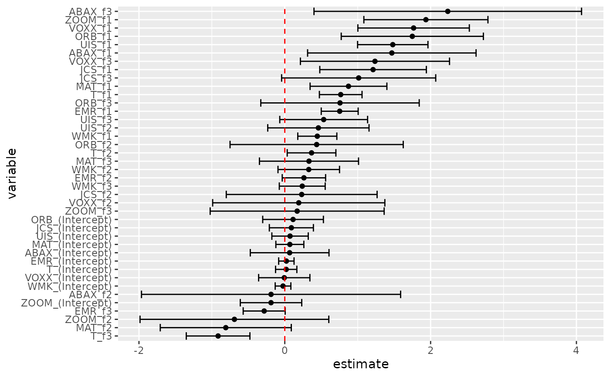

Tidy summarizes information about the components of a model. A model component might be a single term in a regression, a single hypothesis, a cluster, or a class. Exactly what tidy considers to be a model component varies across models but is usually self-evident. If a model has several distinct types of components, you will need to specify which components to return.
# S3 method for gmm tidy(x, conf.int = FALSE, conf.level = 0.95, exponentiate = FALSE, ...)
Arguments
| x | A |
|---|---|
| conf.int | Logical indicating whether or not to include a confidence
interval in the tidied output. Defaults to |
| conf.level | The confidence level to use for the confidence interval
if |
| exponentiate | Logical indicating whether or not to exponentiate the
the coefficient estimates. This is typical for logistic and multinomial
regressions, but a bad idea if there is no log or logit link. Defaults
to |
| ... | Additional arguments. Not used. Needed to match generic
signature only. Cautionary note: Misspelled arguments will be
absorbed in |
See also
Other gmm tidiers:
glance.gmm()
Value
A tibble::tibble() with columns:
Upper bound on the confidence interval for the estimate.
Lower bound on the confidence interval for the estimate.
The estimated value of the regression term.
The two-sided p-value associated with the observed statistic.
The value of a T-statistic to use in a hypothesis that the regression term is non-zero.
The standard error of the regression term.
The name of the regression term.
Examples
library(gmm) # examples come from the "gmm" package ## CAPM test with GMM data(Finance) r <- Finance[1:300, 1:10] rm <- Finance[1:300, "rm"] rf <- Finance[1:300, "rf"] z <- as.matrix(r - rf) t <- nrow(z) zm <- rm - rf h <- matrix(zm, t, 1) res <- gmm(z ~ zm, x = h) # tidy result tidy(res)#> # A tibble: 20 x 5 #> term estimate std.error statistic p.value #> <chr> <dbl> <dbl> <dbl> <dbl> #> 1 WMK_(Intercept) -0.00467 0.0566 -0.0824 9.34e- 1 #> 2 UIS_(Intercept) 0.102 0.126 0.816 4.15e- 1 #> 3 ORB_(Intercept) 0.146 0.203 0.718 4.73e- 1 #> 4 MAT_(Intercept) 0.0359 0.110 0.326 7.45e- 1 #> 5 ABAX_(Intercept) 0.0917 0.288 0.318 7.50e- 1 #> 6 T_(Intercept) 0.0231 0.0774 0.298 7.65e- 1 #> 7 EMR_(Intercept) 0.0299 0.0552 0.542 5.88e- 1 #> 8 JCS_(Intercept) 0.117 0.155 0.756 4.50e- 1 #> 9 VOXX_(Intercept) 0.0209 0.182 0.115 9.09e- 1 #> 10 ZOOM_(Intercept) -0.219 0.202 -1.08 2.79e- 1 #> 11 WMK_zm 0.317 0.126 2.52 1.16e- 2 #> 12 UIS_zm 1.26 0.230 5.49 3.94e- 8 #> 13 ORB_zm 1.49 0.428 3.49 4.87e- 4 #> 14 MAT_zm 1.01 0.218 4.66 3.09e- 6 #> 15 ABAX_zm 1.09 0.579 1.88 5.98e- 2 #> 16 T_zm 0.849 0.154 5.52 3.41e- 8 #> 17 EMR_zm 0.741 0.0998 7.43 1.13e-13 #> 18 JCS_zm 0.959 0.348 2.76 5.85e- 3 #> 19 VOXX_zm 1.48 0.369 4.01 6.04e- 5 #> 20 ZOOM_zm 2.08 0.321 6.46 1.02e-10#> # A tibble: 20 x 7 #> term estimate std.error statistic p.value conf.low conf.high #> <chr> <dbl> <dbl> <dbl> <dbl> <dbl> <dbl> #> 1 WMK_(Intercept) -0.00467 0.0566 -0.0824 9.34e- 1 -0.116 0.106 #> 2 UIS_(Intercept) 0.102 0.126 0.816 4.15e- 1 -0.144 0.348 #> 3 ORB_(Intercept) 0.146 0.203 0.718 4.73e- 1 -0.252 0.544 #> 4 MAT_(Intercept) 0.0359 0.110 0.326 7.45e- 1 -0.180 0.252 #> 5 ABAX_(Intercept) 0.0917 0.288 0.318 7.50e- 1 -0.473 0.656 #> 6 T_(Intercept) 0.0231 0.0774 0.298 7.65e- 1 -0.129 0.175 #> 7 EMR_(Intercept) 0.0299 0.0552 0.542 5.88e- 1 -0.0782 0.138 #> 8 JCS_(Intercept) 0.117 0.155 0.756 4.50e- 1 -0.186 0.420 #> 9 VOXX_(Intercept) 0.0209 0.182 0.115 9.09e- 1 -0.335 0.377 #> 10 ZOOM_(Intercept) -0.219 0.202 -1.08 2.79e- 1 -0.616 0.177 #> 11 WMK_zm 0.317 0.126 2.52 1.16e- 2 0.0708 0.564 #> 12 UIS_zm 1.26 0.230 5.49 3.94e- 8 0.812 1.71 #> 13 ORB_zm 1.49 0.428 3.49 4.87e- 4 0.654 2.33 #> 14 MAT_zm 1.01 0.218 4.66 3.09e- 6 0.588 1.44 #> 15 ABAX_zm 1.09 0.579 1.88 5.98e- 2 -0.0451 2.22 #> 16 T_zm 0.849 0.154 5.52 3.41e- 8 0.547 1.15 #> 17 EMR_zm 0.741 0.0998 7.43 1.13e-13 0.545 0.936 #> 18 JCS_zm 0.959 0.348 2.76 5.85e- 3 0.277 1.64 #> 19 VOXX_zm 1.48 0.369 4.01 6.04e- 5 0.758 2.21 #> 20 ZOOM_zm 2.08 0.321 6.46 1.02e-10 1.45 2.71#> # A tibble: 20 x 7 #> term estimate std.error statistic p.value conf.low conf.high #> <chr> <dbl> <dbl> <dbl> <dbl> <dbl> <dbl> #> 1 WMK_(Intercept) -0.00467 0.0566 -0.0824 9.34e- 1 -0.151 0.141 #> 2 UIS_(Intercept) 0.102 0.126 0.816 4.15e- 1 -0.221 0.426 #> 3 ORB_(Intercept) 0.146 0.203 0.718 4.73e- 1 -0.377 0.669 #> 4 MAT_(Intercept) 0.0359 0.110 0.326 7.45e- 1 -0.248 0.320 #> 5 ABAX_(Intercept) 0.0917 0.288 0.318 7.50e- 1 -0.650 0.834 #> 6 T_(Intercept) 0.0231 0.0774 0.298 7.65e- 1 -0.176 0.223 #> 7 EMR_(Intercept) 0.0299 0.0552 0.542 5.88e- 1 -0.112 0.172 #> 8 JCS_(Intercept) 0.117 0.155 0.756 4.50e- 1 -0.281 0.515 #> 9 VOXX_(Intercept) 0.0209 0.182 0.115 9.09e- 1 -0.447 0.489 #> 10 ZOOM_(Intercept) -0.219 0.202 -1.08 2.79e- 1 -0.740 0.302 #> 11 WMK_zm 0.317 0.126 2.52 1.16e- 2 -0.00656 0.641 #> 12 UIS_zm 1.26 0.230 5.49 3.94e- 8 0.671 1.85 #> 13 ORB_zm 1.49 0.428 3.49 4.87e- 4 0.391 2.60 #> 14 MAT_zm 1.01 0.218 4.66 3.09e- 6 0.454 1.58 #> 15 ABAX_zm 1.09 0.579 1.88 5.98e- 2 -0.401 2.58 #> 16 T_zm 0.849 0.154 5.52 3.41e- 8 0.453 1.25 #> 17 EMR_zm 0.741 0.0998 7.43 1.13e-13 0.484 0.998 #> 18 JCS_zm 0.959 0.348 2.76 5.85e- 3 0.0627 1.85 #> 19 VOXX_zm 1.48 0.369 4.01 6.04e- 5 0.530 2.43 #> 20 ZOOM_zm 2.08 0.321 6.46 1.02e-10 1.25 2.91# coefficient plot library(ggplot2) library(dplyr) tidy(res, conf.int = TRUE) %>% mutate(variable = reorder(term, estimate)) %>% ggplot(aes(estimate, variable)) + geom_point() + geom_errorbarh(aes(xmin = conf.low, xmax = conf.high)) + geom_vline(xintercept = 0, color = "red", lty = 2)# from a function instead of a matrix g <- function(theta, x) { e <- x[, 2:11] - theta[1] - (x[, 1] - theta[1]) %*% matrix(theta[2:11], 1, 10) gmat <- cbind(e, e * c(x[, 1])) return(gmat) } x <- as.matrix(cbind(rm, r)) res_black <- gmm(g, x = x, t0 = rep(0, 11)) tidy(res_black)#> # A tibble: 11 x 5 #> term estimate std.error statistic p.value #> <chr> <dbl> <dbl> <dbl> <dbl> #> 1 Theta[1] 0.516 0.172 3.00 2.72e- 3 #> 2 Theta[2] 1.12 0.116 9.65 5.02e-22 #> 3 Theta[3] 0.680 0.197 3.45 5.65e- 4 #> 4 Theta[4] -0.0322 0.424 -0.0761 9.39e- 1 #> 5 Theta[5] 0.850 0.155 5.49 4.05e- 8 #> 6 Theta[6] -0.205 0.479 -0.429 6.68e- 1 #> 7 Theta[7] 0.625 0.122 5.14 2.73e- 7 #> 8 Theta[8] 1.05 0.0687 15.3 5.03e-53 #> 9 Theta[9] 0.640 0.233 2.75 5.92e- 3 #> 10 Theta[10] 0.596 0.295 2.02 4.36e- 2 #> 11 Theta[11] 1.16 0.240 4.82 1.45e- 6#> # A tibble: 11 x 7 #> term estimate std.error statistic p.value conf.low conf.high #> <chr> <dbl> <dbl> <dbl> <dbl> <dbl> <dbl> #> 1 Theta[1] 0.516 0.172 3.00 2.72e- 3 0.178 0.853 #> 2 Theta[2] 1.12 0.116 9.65 5.02e-22 0.889 1.34 #> 3 Theta[3] 0.680 0.197 3.45 5.65e- 4 0.293 1.07 #> 4 Theta[4] -0.0322 0.424 -0.0761 9.39e- 1 -0.862 0.798 #> 5 Theta[5] 0.850 0.155 5.49 4.05e- 8 0.546 1.15 #> 6 Theta[6] -0.205 0.479 -0.429 6.68e- 1 -1.14 0.733 #> 7 Theta[7] 0.625 0.122 5.14 2.73e- 7 0.387 0.864 #> 8 Theta[8] 1.05 0.0687 15.3 5.03e-53 0.919 1.19 #> 9 Theta[9] 0.640 0.233 2.75 5.92e- 3 0.184 1.10 #> 10 Theta[10] 0.596 0.295 2.02 4.36e- 2 0.0171 1.17 #> 11 Theta[11] 1.16 0.240 4.82 1.45e- 6 0.686 1.63## APT test with Fama-French factors and GMM f1 <- zm f2 <- Finance[1:300, "hml"] - rf f3 <- Finance[1:300, "smb"] - rf h <- cbind(f1, f2, f3) res2 <- gmm(z ~ f1 + f2 + f3, x = h) td2 <- tidy(res2, conf.int = TRUE) td2#> # A tibble: 40 x 7 #> term estimate std.error statistic p.value conf.low conf.high #> <chr> <dbl> <dbl> <dbl> <dbl> <dbl> <dbl> #> 1 WMK_(Intercept) -0.0240 0.0548 -0.438 0.662 -0.131 0.0834 #> 2 UIS_(Intercept) 0.0723 0.127 0.567 0.570 -0.177 0.322 #> 3 ORB_(Intercept) 0.114 0.212 0.534 0.593 -0.303 0.530 #> 4 MAT_(Intercept) 0.0694 0.0979 0.709 0.478 -0.122 0.261 #> 5 ABAX_(Intercept) 0.0668 0.275 0.242 0.808 -0.473 0.606 #> 6 T_(Intercept) 0.0195 0.0745 0.262 0.793 -0.126 0.165 #> 7 EMR_(Intercept) 0.0217 0.0538 0.404 0.687 -0.0837 0.127 #> 8 JCS_(Intercept) 0.0904 0.154 0.586 0.558 -0.212 0.393 #> 9 VOXX_(Intercept) -0.00706 0.179 -0.0394 0.969 -0.359 0.344 #> 10 ZOOM_(Intercept) -0.189 0.215 -0.878 0.380 -0.610 0.233 #> # … with 30 more rows# coefficient plot td2 %>% mutate(variable = reorder(term, estimate)) %>% ggplot(aes(estimate, variable)) + geom_point() + geom_errorbarh(aes(xmin = conf.low, xmax = conf.high)) + geom_vline(xintercept = 0, color = "red", lty = 2)